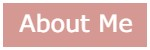

|  |  |
 |
Find Our Bitmojis!
By Ashly MR and Abby Civiello using Khan Academy
Finding My Bitmoji is an inspiration from the Finding Waldo game. My partner Abby
and I thought that it would be a nice little game with a ten-second timer that resets each level.
There are five levels and the difficulty level increases as you go on. The scoring works
how fast the user finds and clicks on the Bitmoji found. The highest score that you can
get is 50! Can you reach it?